5 面部上三分之一：额凹
面部上三分之一额凹区
YATES YEN-YU CHAO, NIAMH CORDUFF, AND JANI VAN LOGHEM
5.1 引言
从尺寸上看，前额几乎占我们面部的三分之一。在谈论面部轮廓塑形或面部年轻化时，额头的形态无疑是整个面部的重要组成部分，也必须予以关注。理想的额头形态应该是饱满的，具有最佳的凸度，与眉毛、颏前凹陷区（glabella）、太阳穴和颧骨平滑连续。上部面部的完整治疗应涵盖额头、颏前凹陷区、眉毛和太阳穴。
然而，大多数医生不愿深入处理额头和颏前凹陷区，主要是担心该区域存在许多脆弱的血管。额上动脉/眶上动脉和静脉通过眼眶边缘的上缘穿行，刺入皱眉肌，然后在额肌表面分布。浅颞动脉从浅筋膜系统横向走行至皮下层，从外侧发际线延伸至外侧额部。在太阳穴区域，大多数其他血管结构都深于深颞筋膜。如果充分考虑这些解剖学结构，上部面部的填充剂注射是完全可行的。
太阳穴的体积增大可以在骨膜上间隙或筋膜层内进行。当填充剂用于骨膜上间隙时，锐针更方便，可以轻松穿透深颞筋膜和颞肌到达骨骼。使用可塑性物质进行的团注可以很容易地用具有合理扩散性的物质填充该空间。如果计划用填充剂填充筋膜层，则较细的填充剂更适合这种相对表浅层的均匀分布。当在筋膜层中使用填充材料时，作者倾向于使用钝性套管针以确保更安全、更精确的操作过程。作者通常采用进入颧骨嵴位置的切口作为技术，因为这样可以更容易地到达颞窝的整个范围。作者建议使用 23G 或更粗的套管针，以减少套管针的弯曲和提高填充剂输送的精度。较细的套管针的行为更像锐针，可能会增加血管损伤的风险。
当需要同时进行额头和太阳穴的体积增大时，必须考虑从太阳穴到额头的过渡区域。
颞窝的筋膜层终止于颞嵴，这是颞肌附着在额骨上的位置。连续的曲线应被考虑。
对于额部区域，皮下（subgaleal）空间是放置外源性填充材料最合适的层次。对于大多数患者而言，他们的额骨具有许多曲度，存在突起和凹陷的区域，而皮下空间实际上是由薄纤维组织占据的空间，并非像一些教科书中所描述的那样松弛，而是相对致密的。我们的额部具有独特的解剖结构，其中额骨负责了大部分额头形态，然后向上依次是骨膜、滑膜间隙、额表层腱膜（galea aponeurotica）、额肌、皮下脂肪和皮肤。骨膜紧密附着于额骨。额肌和额部浅层脂肪区结构都相当薄——对形态起到的作用较小——仅起到软化轮廓的作用。皮肤厚度因人而异，男性皮肤更厚，而女性、高加索人或年老者皮肤更薄。即使对于皮肤较厚的患者，额头填充也可能非常考验技术。任何填充剂分布不均或曲线不自然的地方，都很容易透过上方的薄软组织显现出来。
对组织本身进行分离操作有点不适，并且在接近神经和血管等重要结构时可能会引起疼痛。我们自身身体的疼痛感本身就是一个天生的保护系统。因此，局部麻醉剂注射或神经阻滞可以使患者麻木并阻断这一警报系统。在注射过程中，应避免粗暴地刺入套管针，并注意倾听患者的反应。如果患者抱怨疼痛，则在该区域应谨慎操作，动作放慢，或转用不同的路径。但如果患者完全失去了痛觉，那么检测到血管受损的情况就更困难了。
由于疼痛和对血管内注射的担忧，额头的轮廓塑形工作通常对患者来说非常令人不安，也让注射者感到困难。然而，借助新型生理盐水水肿剥离技术（saline hydrodissection）的帮助，整个过程变得更加轻松和安全 [1,2]。
5.2 动脉危险区
必须考虑动脉危险区，并注意针尖不要继续深入
穿过真皮层，而是保留在真皮内 [3]。该区域存在的重要的动脉与第4章所述相似，包括眶上动脉的内支、上丘骨动脉和浅颞动脉的额支（图 5.1）。
5.3 安全注意事项
出于安全考虑，进行前额轮廓塑形时，首选钝性套管针而非锐针——在额部使用钝性套管针仍然非常具有挑战性。钝性套管针必须通过有限的皮下鞘间隙植入。钝性套管针在皮下鞘间隙内移动的过程是一种组织分离过程。如果我们希望填充剂分布彻底均匀，但没有充分分离该空间，那么薄的纤维化组织仍可能限制填充剂的扩散和分布。这可能导致表面不平整和轮廓效果不佳。
5.4 利用生理盐水水解分离进行彻底的上部面部塑形
5.4.1 分步技术
-
对前额进行消毒，标记额凹陷处，确定位于眉毛上方的颞嵴处的进针点，并估算所需的填充剂用量。
-
使用 20G 锐针刺破皮肤（可考虑先使用局部麻醉对皮肤进行编号）。
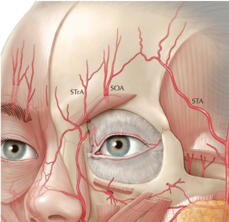
-
准备一个装有生理盐水的 3 mL 注射器，并将其连接到 22G 的钝性套管针上。
-
将钝性套管针通过皮肤引入，并推进至皮下鞘间隙。
-
当确定钝性套管针位于骨膜上时，开始在预标记区域内渗透生理盐水（不含利多卡因）。
-
使用填充剂的团注模式进行生理盐水注射（图 5.3）。生理盐水本身不会阻断神经感觉，使治疗区域在后续填充过程中保持警觉。
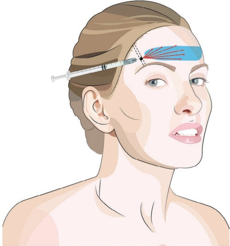
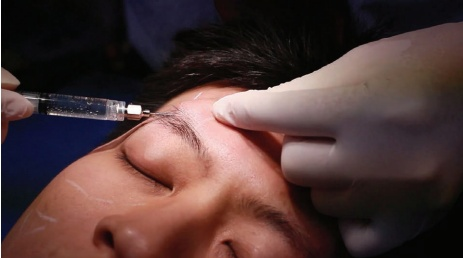
-
使用手部按压/推移手法，将液压压力导向分离注射的填充剂团注周围的皮下空间。经过生理盐水冲洗形成的区域在多点部署生理盐水后会汇合在一起。
-
医生可以在注射填充剂前等待几分钟（图 5.4）。
-
尽管皮下空间已通过生理盐水分离充分准备，但第二步的填充剂输注仍需非常小心。然而，根据作者的经验，第二步通常完全不痛，且遇到的阻力非常有限。
-
眉间区域也覆盖有皱眉肌腱膜，只有最外侧边缘与皱眉肌相连。该区域的塑形可使用类似的水肿分离技术更轻松地实现，但套管针必须穿过靠近内眼角的更关键区域。因此，注射者在该区域必须更加小心。
-
在充分渗透了填充剂并达到满意的分布后，我们可以用手将皮下填充剂塑造成所需的形状、弧度和投影大小。
5.5 套管针技术（三点或五点入路）
关于注射定位，参见图 5.5。
5.5.1 分步技术
-
作为替代避免麻醉的建议（Chao 医生），可考虑进行眶上神经和眶上裂神经阻滞。在眶上神经、眶上裂神经和颧颞神经的出口位置附近注射约 0.1–0.5 mL 的 1% 利多卡因加肾上腺素；参见第三章的局部麻醉。
-
标记额凹和颞嵴的外侧边缘，并标记入点。如有必要，根据额凹的形状，还可在靠近发际线的颞嵴处标记两个额外的入点。
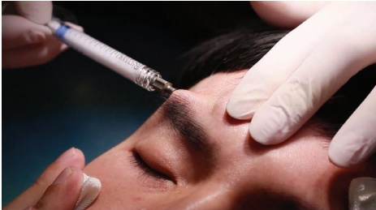
-
在颞嵴外侧边缘线上，距眶缘约 1 cm 处可标记一个低风险入点（图 5.6），尽管浅颞动脉的解剖变异性很高。面神经的颞支会分出许多分支，而主干通常比此入点更靠颅侧地通过颞嵴。
-
如有需要，使用肾上腺素化的利多卡因 1% 对该点进行麻醉，然后再用 21G 锐针在皮肤上打一个预孔。
-
使用硬性套管针（建议使用 25G、38 mm 套管针或 22G、50 mm 套管针），推进至皮下脂肪层。
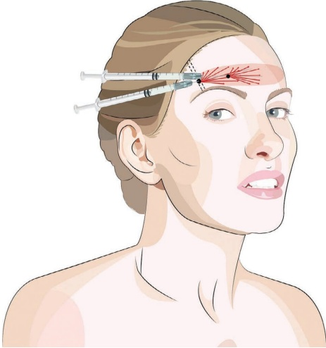
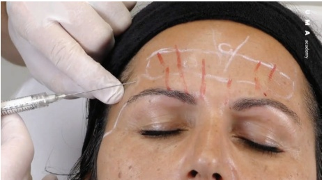
-
用非惯用手的拇指和食指捏起钝性套管针前方的皮肤，使肌肉从骨膜上抬起。这样就创造了一条朝向深层、阻力最小的水平路径（图 5.7）。
-
将钝性套管针穿过头皮腱膜的阻力。这需要适量的力量，因为该处头皮可能相当坚韧。通常采用铅笔滚动技术很有价值，即用指间旋转注射器，使钝性套管针尖找到阻力最小的路径。
在抬起钝性套管针前方的肌肉的同时，将钝性套管针推进到头皮下间隙，并从额凹最尾侧处开始。由于许多产品含有利多卡因，会麻醉眶上神经，因此从较低部位开始注射，在使用神经阻滞剂时，后续也会使额部较高区域麻木。
-
使用扇形模式放置多个游走型线性缝线（图 5.8）
-
第二个入点位于中线和外侧入点之间。
可能的第三个入点是中线入点。它可以在中线的标记性额凹的颅侧立即找到。
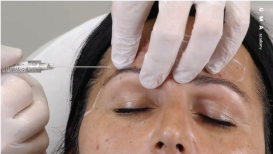
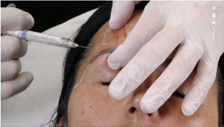
-
如有必要进行麻醉，并在骨膜水平放置一些利多卡因以进行水裂解。
-
用锐针制造一个开口，并将钝性套管针沿外侧方向推进到头皮腱膜下方。
-
以扇形模式放置多个游走型线性缝线。为降低严重血管并发症的几率，将游走型缝线的最大尺寸控制在每根 0.025 mL，并用非惯用手的拇指和食指持续压迫眶上动脉或颞上动脉（图 5.8）。
-
用直接按摩使产品均匀分布。
5.6 头皮下锐针团注技术
关于注射放置，参见图 5.9
警示信息：额部/颏前区使用锐针与血管并发症风险增加相关。在该区域，钝性套管针技术被认为更安全。只有当注射者不使用钝性套管针时，才可考虑使用针头，并注意以下额外的安全建议：使用小口径针头（27–28 G）；采用倾斜入路将锥形面朝下放置；通过拉动针周围的皮肤来抬起血管，使其远离针尖；在骨膜上使用小体积团注，并对活塞施加低压；并在注射时压迫颞上动脉。当针头未预充液时可进行吸液检查。
5.6.1 分步技术
-
可考虑进行眶上和颞上神经阻滞。在神经出口部位（眶上和颞上切口/孔）附近注射约 0.1–0.2 mL 的 1% 利多卡因加肾上腺素。有关神经阻滞，参见第三章。
-
标记额凹、颞嵴外缘以及眶上皱纹和皱眉肌皱纹的位置（标示动脉的大致位置）（图 5.11）。
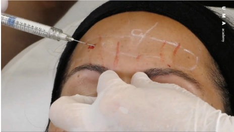
-
选择一根短的 27G 锐针。
-
使用 CaHA 的标准稀释液。
-
用非惯用手的拇指和食指抬起眉毛，在针头前方撑开额部皮肤（图 5.12）。
-
以约 45° 角倾斜、切口朝下的方式将针头推进至骨膜处（图 5.13）。
-
使用已预充气的锐针进行吸液检查总是呈阴性结果，因此应避免吸液检查，并且不能将阴性吸液（套管内无血液）视为证实物质已超出血管腔。
-
改变非惯用手的指位，对提上睑动脉施加压力。
-
轻触骨膜，注射最大 0.025 mL 的骨膜团注。
-
部分地回撤，但不离开皮肤，重新定向并再次推进针头至骨膜处。
-
再注射一剂最大 0.025 mL 的团注。
-
根据需要重复上述步骤。
-
取出针头，每隔 0.5 cm 重复一次，直至完全矫正。
-
通过有目的的塑形使产品均匀分布。
5.7 术后护理
注射后，由于产品中含有利多卡因，额肌可能会暂时松弛。此外，由于该区域压力增加，静脉可能出现短暂的扩张。额部肿胀可能不均匀，因此应告知患者任何肿胀都是可以预期的，并且是暂时的，但可能持续长达五天。肿胀也可能向下蔓延至眼睑。
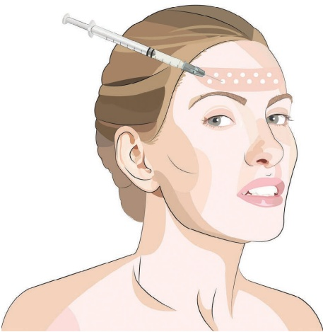
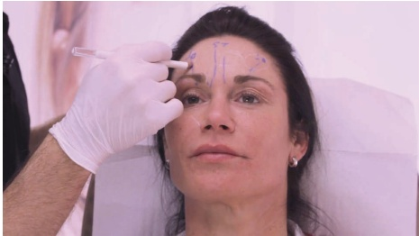
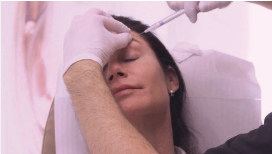
5.8 实现最佳效果的附加治疗
对于皱纹的真皮层治疗，可以使用薄到中等厚度的软组织填充剂，同时保持
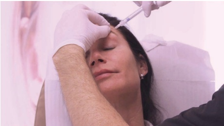
考虑到这里的皱纹是动态的，也会从预先使用肉毒毒素进行治疗中受益。理想情况下，应使用低粘弹性但高内聚力的透明质酸填充剂，最好采用真皮层（泛红）技术进行注射，即置于乳突真皮层，以纠正额部皱纹。对于真皮层注射，应使用锐针，因为非创伤性钝性套管针不易穿透真皮层。
向这些动脉中的任何一根进行动脉内注射可能会导致永久性失明，因此应考虑使用非创伤性钝性套管针进行注射，理想情况下是水平的，垂直于（纵向）动脉的方向。浅表放置的产品在眉毛活动时可能可见，因为填充剂的位置相对于凹陷处会发生变化。当患者抬起眉毛时，这会在凹陷处上方形成明显的凸度，这在美学上可能是次优的结果 [4]。
软组织填充剂通常不进行肌内注射，因为肌肉收缩可能会移位产品并引起可见的结节。无论进行肌内注射还是颅表层注射，都会产生与皮下注射相同的美容问题：产品的位置会在活动时发生变化。
作为亚脱皮层放置的填充剂可能会拉伸额肌，可以预期水平额皱纹会减轻（图 5.14）[5]。
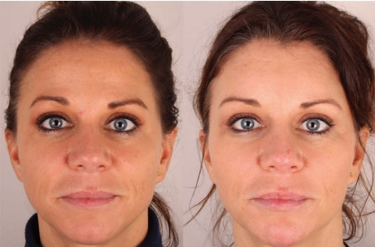
参考文献
[1] J. Sykes, “Applied anatomy of the temporal region and forehead for injectable fillers,” J Drugs Dermatol, vol. 8, no. Suppl 10, pp. 24–27, 2009.
[2] Y. Y. Y. Chao, “Saline hydrodissection: A novel technique for the injection of calcium hydroxylapatite fillers in the forehead,” Dermatol Surg, vol. 44, no. 1, pp. 133–136, Jan. 2018.
[3] W. Prager, P. Micheels, “A prospective, comparative survey to investigate practitioners’ satisfaction with a cohesive, polydensified-matrix®), hyaluronic acid-based filler gel with and without lidocaine for the treatment of facial wrinkles,” J Cosmet Dermatol, vol. 14, no. 2, pp. 124–129, Jun. 2015.
[4] X. Li et al., “A novel hypothesis of visual loss secondary to cosmetic facial filler injection,” Ann Plast Surg, vol. 75, no. 3, pp. 258–260, Sep. 2015.
[5] R. B. Shaw et al., “Aging of the facial skeleton: Aesthetic implications and rejuvenation strategies,” Plast Reconstr Surg, vol. 127, no. 1, pp. 374–383, 2011.
[6] J. A. J. van Loghem, “Use of calcium hydroxylapatite in the upper third of the face: Retrospective analysis of techniques, dilutions and adverse events,” J Cosmet Dermatol, vol. 17, no. 6, pp. 1025–1030, Dec. 2018.